Pulse
Arena
Anchor
Professor's Pulse
AI-generated check-inHow confident are you with the concept we just covered?
31responses
09sremaining
A Zoom App for live college lectures
Momentum lets professors check whether students are keeping up, and gives students a live topic timeline, an automatic glossary, and one-tap bookmarks for anything they miss.
Demo
Try it in a simulated Zoom classroom, or watch a short recording of a real session: the host launches a check-in while a student follows along, bookmarks a moment, and opens their recovery pack after class.
A full Zoom meeting mock-up that runs in your browser. Launch a poll as the professor, then switch to the student view and answer it. No install and no sign-in.
What it does
Four tools that all run on the live lecture transcript. Professors check understanding during class, and students follow along and fill the gaps after.
Professor's Pulse
One click drafts a poll from the last few minutes of lecture. The professor edits it, launches it, and watches the answers come in live.
Warm-Up Arena
AI writes review questions from the lecture, students race a countdown, and faster correct answers score higher on a live leaderboard.
Live Anchor
Momentum listens to the live transcript, marks every topic change, and defines new terms the moment they're said, in any of six languages. Join late or lose your place, and you can still see the current topic and every term defined so far.
Recovery Agent
Students bookmark hard moments privately during class. After class, every bookmark turns into a recovery pack with plain-language explanations, practice prompts, and notes to download.
Screenshots
The actual Momentum interface, docked in the side panel of a live Zoom meeting. Blue tags mark the professor's panel; green tags mark a student's.
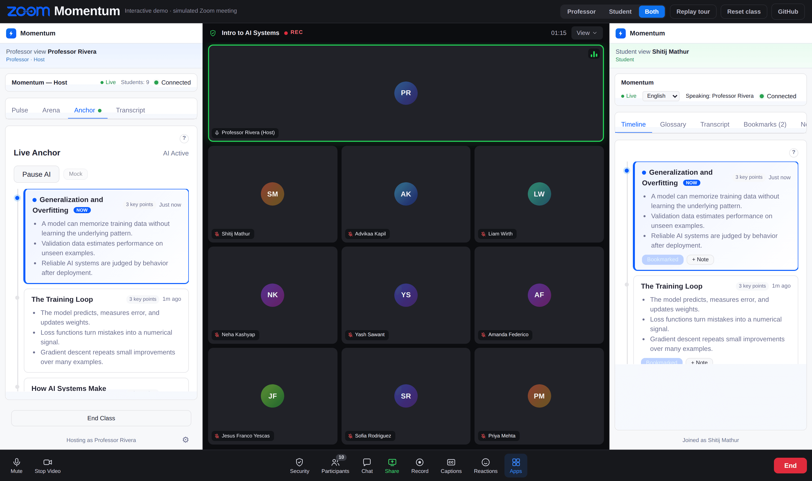
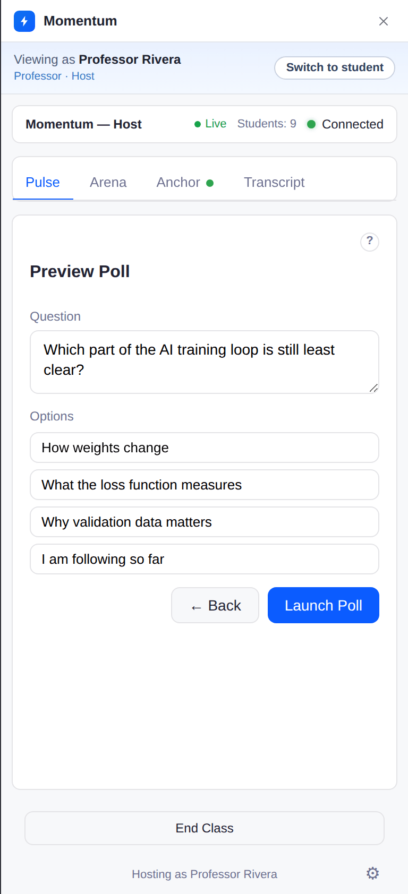
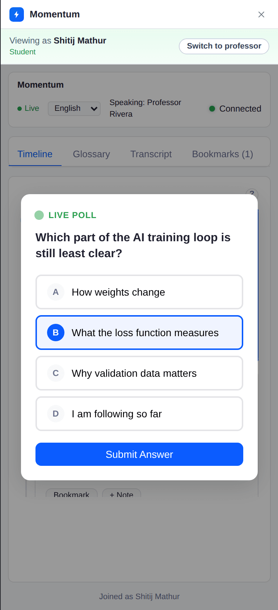
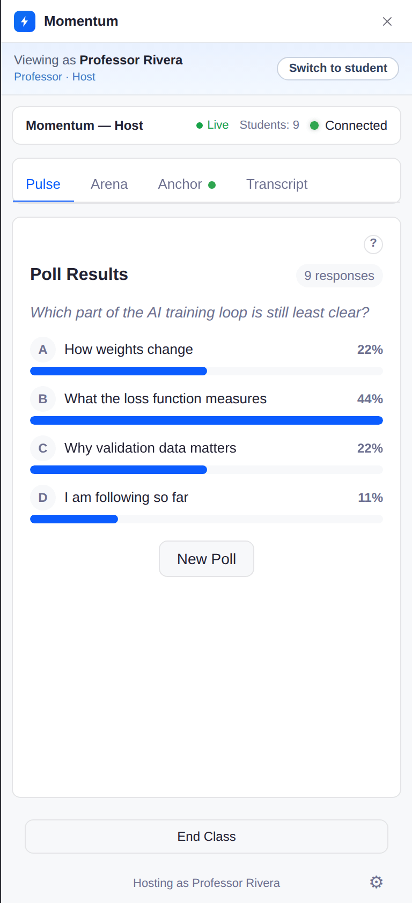
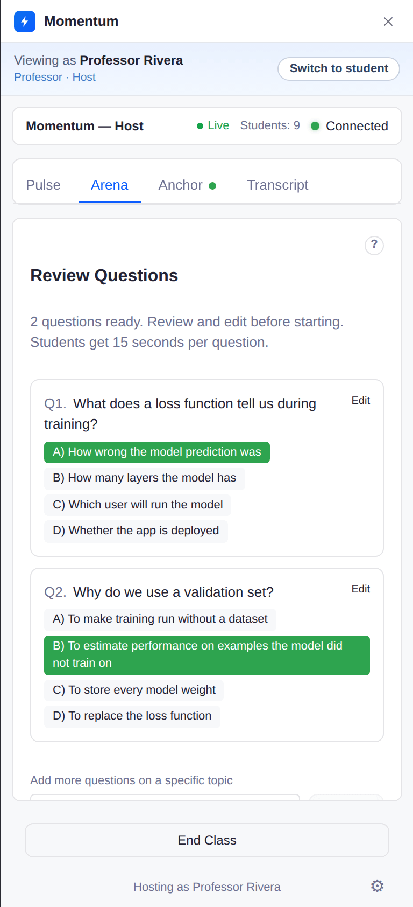
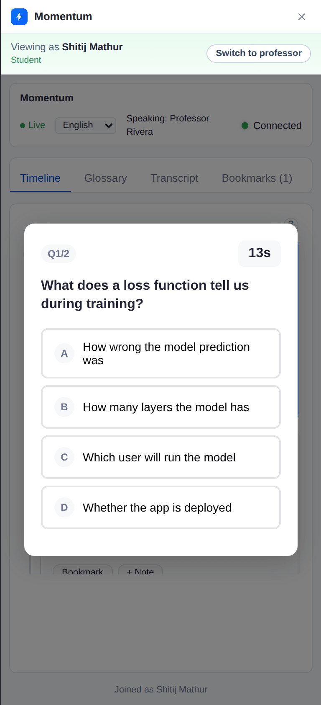
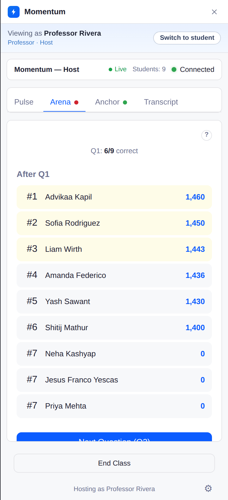
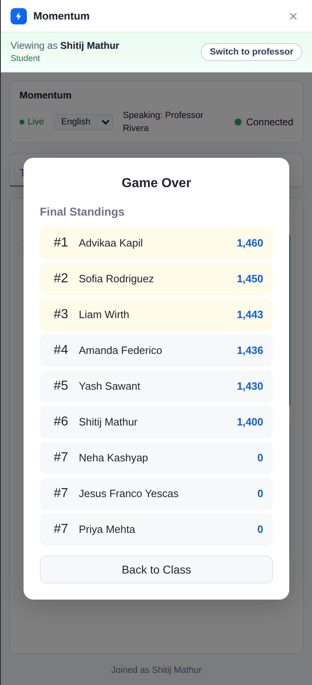
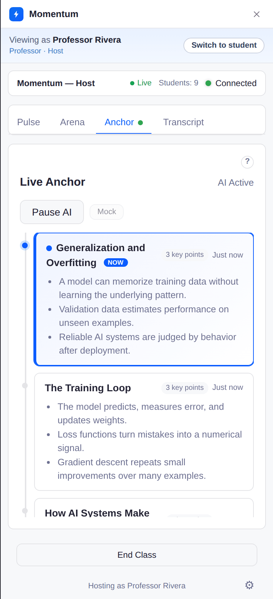
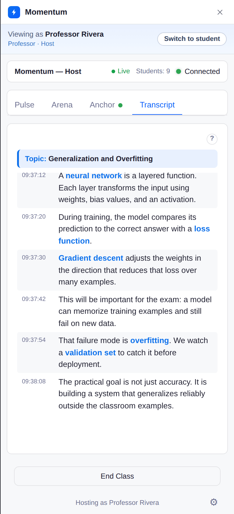
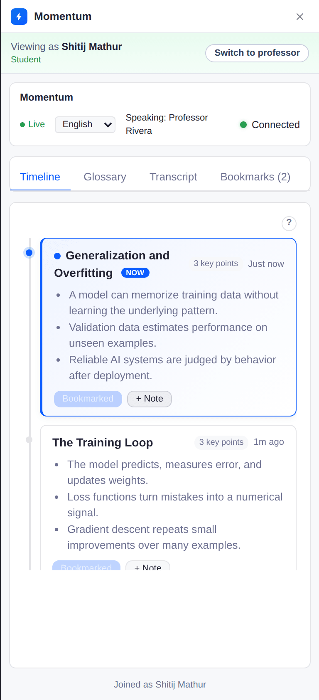
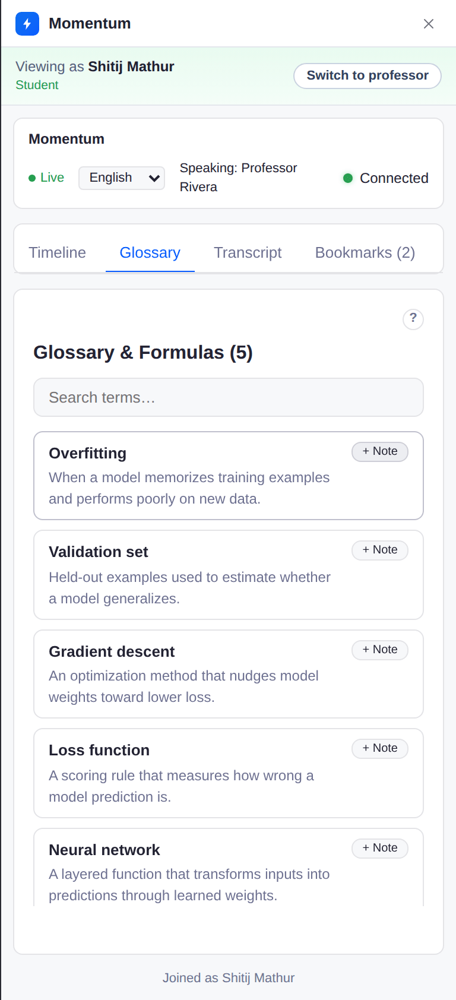
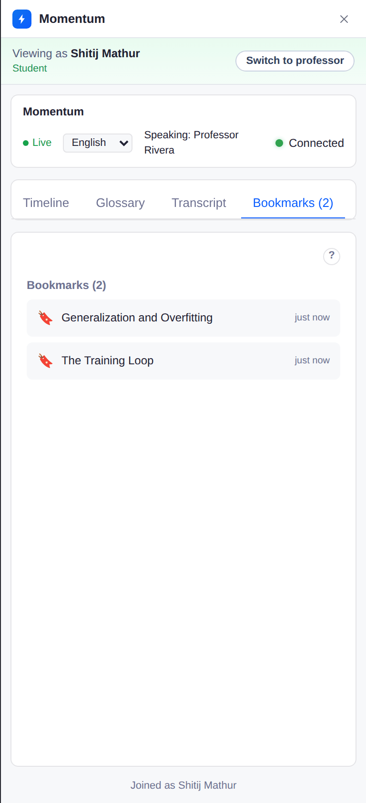
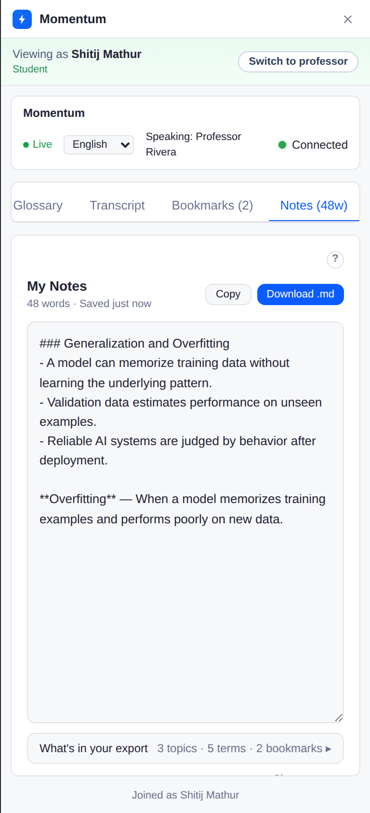
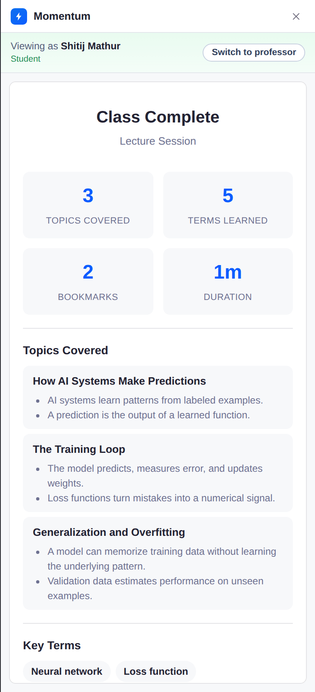
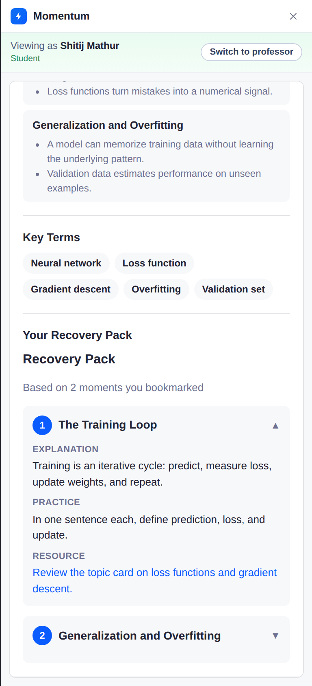
Fellowship project
About the program
It's run by Next Lab, ASU's emerging-technology studio focused on the future of teaching and learning. The goal is working products that real classrooms can actually use. Momentum is one of three projects in the 2025 cohort.